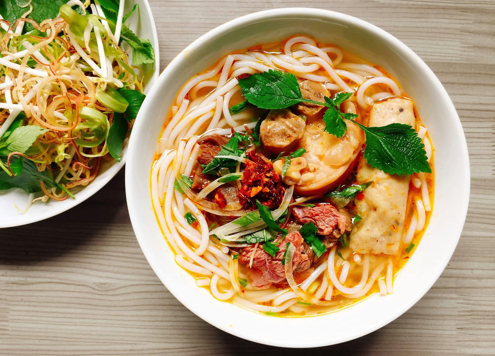

Ingredients:
- 2 packs of ramen noodles
- 4 cups chicken broth
- 2 tablespoons soy sauce
- 1 tablespoon miso paste
- 1 teaspoon sesame oil
- 2 cloves garlic, minced
- 1-inch piece of ginger, grated
- 2 green onions, sliced
- 2 eggs, boiled and halved
- 1 cup sliced mushrooms
- 1 cup shredded cooked chicken
- Nori seaweed, for garnish
- Sesame seeds, for garnish
Instructions:
- Bring the chicken broth to a simmer in a pot over medium heat.
- Add soy sauce, miso paste, sesame oil, minced garlic, and grated ginger. Stir to combine.
- Add sliced mushrooms and shredded chicken. Let simmer for 5 minutes.
- Cook the ramen noodles according to the package instructions.
- Divide the cooked noodles among serving bowls. Ladle the broth and chicken mixture over the noodles.
- Top each bowl with a halved boiled egg, sliced green onions, nori seaweed, and sesame seeds.
- Enjoy your delicious Ichiraku Ramen!